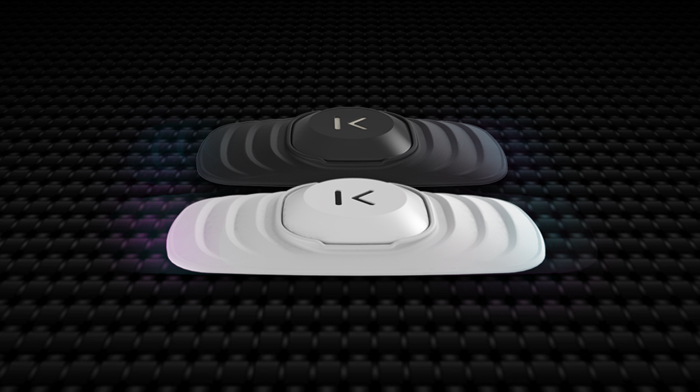

Filters
Kenzen's Echo Smart Patch

The Echo Smart Patch is a small device worn directly against the skin. It analyses sweat content to see the wearer's level of hydration, amount of exercise, level of sodium and glucose. While the product is mainly targeted to athletes, the amount and precision of information can be useful for all.
Get it at Kenzen.com